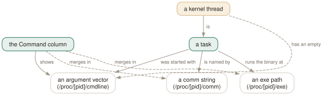

Day 02
The process list
Moving around a list ten times taller than your screen, and reading the twelve default columns.
By the end of today you can
- move to any process in a list of three thousand without using the mouse
- read every one of the twelve default columns, and say which are facts and which are rates
- explain why the Command column is a reconstruction, and change what goes into it
The screen is a window onto a much longer list
Your terminal shows perhaps forty rows. A desktop Linux machine has two or three thousand tasks. Almost everything htop knows is off-screen at any moment, so the first skill is not reading — it is getting to the row you want without losing your place.
Two things move independently, and confusing them is the commonest source of “htop just jumped on me”. The selection is the highlighted row, and it is what every action key operates on. The view is which slice of the list is painted. Arrow keys move the selection and drag the view along behind it; the panning keys move the view and leave the selection alone.
- Up Down / Alt-k Alt-j
- One row. The Alt forms exist so you can navigate without leaving the home row.
- PgUp PgDn
- One screenful.
- Home End
- First and last process. End is the honest way to see how long the list really is.
- Alt-Up Alt-Down
- Pan the view, selection untouched.

Command column is not a field the kernel hands over — it is assembled, and m and p change the recipe. Notice that the three sources can disagree: a process can be renamed in its own argument vector while comm and exe still say what it really is, which is exactly how a process hides. Follow the dashed aspect at the bottom for the other consequence: an empty argument vector is what makes something a kernel thread to htop, and those are the rows drawn in bold grey.Sideways is a direction too
Command lines are long — a Chrome renderer's runs to several hundred characters — so htop scrolls horizontally as well. Left and Right (or Alt-h and Alt-l) move the whole list sideways as a block, heading row included.
Because the heading row scrolls too, going far enough right leaves you looking at unlabelled columns of numbers. Ctrl-A (or ^) jumps back to the start of the line and Ctrl-E (or $) jumps to the end of the selected process's entry — the readline keys, chosen deliberately so you already know them.
The twelve columns you get for free
A fresh htop shows these, in this order. Three of them are about memory and get a day of their own tomorrow, because they are the ones everybody misreads.
PID- The task's id. For a thread this is the thread id, not the process id.
USER- Owner. Truncated to ten characters, so
systemd-resolveappears assystemd-re. PRI- The kernel's internal priority — normally nice + 20.
RTmeans a real-time process. NI- Nice value, −20 (greedy) to 19 (generous). Day 6 changes it.
VIRTRESPRIV- Memory. Tomorrow. Do not add these up across processes today.
S- State. The single most information-dense character on the screen; see below.
CPU%- Share of one core over the last sample. A rate, not a fact.
MEM%- Resident memory as a share of total RAM. Derived from
RES. TIME+- Cumulative CPU time since the process started. A total, not a rate.
Command- Assembled, not read. The rest of this lesson is about how.
Seven letters in the S column
Most rows say S. The interesting ones never do.
S- Sleeping — waiting on something. The normal state of almost everything.
I- Idle. A kernel thread with nothing to do, split out from
Sso it stops cluttering your attention. R- Running or runnable. Count these against your core count; the header's
runningfigure is exactly this. D- Uninterruptible sleep, essentially always disk or network I/O. A process in
Dcannot be killed, which is Day 6's most annoying lesson. Z- Zombie — exited, but its parent has not collected the exit status. Costs a process-table slot and nothing else.
T- Traced or stopped. Under a debugger, or suspended with Ctrl-Z.
W- Paging. You will not see this on modern Linux.
Command is a reconstruction
The kernel offers three different answers to “what is this process”, and they can all disagree:
/proc/[pid]/cmdline- The argument vector, as the process last set it. A process may rewrite this, and some deliberately do.
/proc/[pid]/comm- A short name, 15 characters, settable per-thread. This is where thread names live.
/proc/[pid]/exe- A symlink to the binary actually executing. The hardest of the three to lie about, and the one that needs privilege to read for other users' processes.
By default Command shows the argument vector. Two keys change that:
p # full paths off: /usr/lib/systemd/systemd-journald -> systemd-journald
m # merge on: claude -> JITWorker│claude (heading becomes 'Command (merged)')
With m active htop splices comm and the exe basename into the line, separated by a vertical bar, and the heading changes to Command (merged) so you can tell at a glance which mode you are in. It is how you see thread names without adding a column.
The column is also colour-coded, and the colours are doing real work: magenta for ordinary process names, bold blue for userland thread names, bold grey for kernel threads and anything with no command name at all. That last case is the tell — a kernel thread has an empty cmdline, which is precisely how htop classifies it.
Today's habit
Stop reaching for the mouse. For the next few days, every time you want a particular process, get to it with End, PgUp and the arrows. Tomorrow's lesson assumes you can park the selection on any row without thinking about it, and Day 4 replaces all of this with something faster anyway — but only once the navigation is reflex.
Tomorrow: the three memory columns you skipped, and why adding any of them up gives the wrong answer.
New vocabulary
Keys
| Key | Does |
|---|---|
| UpDown | Move the selection one row. Alt-k and Alt-j do the same. |
| PgUpPgDn | Move the selection a screenful at a time. |
| HomeEnd | Jump to the first or the last process in the list. |
| LeftRight | Scroll the whole list sideways. Also Alt-h and Alt-l. |
| Ctrl-A^ | Scroll back to the start of the selected process's line. |
| Ctrl-E$ | Scroll to the end of the selected process's line. |
| Alt-UpAlt-Down | Pan the view without moving the selection. Shift-Up/Shift-Down too, if your terminal lets them through. |
| p | Toggle full program paths in Command. |
| m | Toggle merging exe, comm and cmdline into Command. |
Drillsdo these in a real terminal, today
Self-check
Answer out loud first, then unfold.
A colleague says “htop says the machine is running 2342 processes, no wonder it's slow”. The header reads Tasks: 219, 2342 thr, 429 kthr; 1 running. What is actually true?
There are 219 processes. 2342 is the count of threads, 429 of which are kernel threads, and the number that matters for “is this machine busy” is the last one: 1 running. Everything else is asleep.
A thread costs a scheduler entry and a stack, not a core. Machines routinely carry thousands and idle at zero load. By default htop hides kernel threads and shows userland ones, which is why the list is longer than the process count — Day 10 covers the K and H toggles that change this.
You scroll right to read a long command line, then want to compare two processes' RES values — but you can no longer tell which column is which. What went wrong, and what is the fast way out?
The whole list scrolls sideways as one block, headings included. Scroll far enough right and the heading row runs out of text entirely, leaving you with columns of numbers and nothing to label them.
Ctrl-A (or ^) snaps back to the start of the line in one keystroke. The better move for reading a long command line is not to scroll at all: Day 7's w opens the selected process's command wrapped across a whole screen, with the list left where it was.
The manual page's COLUMNS section says a traced or suspended process shows T, but htop's own help screen says t. Which will you see, and does it matter?
The two disagree because they were written at different times, and this course follows the binary: htop's built-in help (F1) is generated from the same source as the display. Press Ctrl-Z on something in another terminal and read the letter yourself — that is the only authority worth having.
It matters in exactly one situation, which is the one where you will meet it: you are grepping or eyeballing for stopped processes at two in the morning, and you search for the wrong letter and conclude there are none.
Two rows show the same command line and nearly identical memory numbers, but one has a much larger PID and almost no TIME+. Are you looking at two copies of a program?
Probably not — you are most likely looking at a process and one of its threads. htop shows userland threads as rows by default, and a thread inherits its process's command line, so they are near-indistinguishable in the default column set.
Two ways to settle it. Press m: merged mode shows the thread's own name joined to the command line, so a thread reads KMS thread│gnome-shell rather than gnome-shell. Or add the TGID column (Day 10) — a thread's TGID is its process's PID, and for a process TGID equals PID.
Cheat sheet
Up Down Alt-k Alt-j # move the SELECTION (view follows)
PgUp PgDn # a screenful
Home End # first / last process in the list
Alt-Up Alt-Down # pan the VIEW, selection stays put
# (Shift-Up/Down too -- terminals often steal these)
Left Right Alt-h Alt-l # scroll sideways, headings included
Ctrl-A ^ Ctrl-E $ # start / end of the selected process's line
p # full program paths on/off
m # merge exe+comm+cmdline -> 'Command (merged)'
S column: S sleeping I idle R running D uninterruptible I/O
Z zombie T traced/stopped W paging (never, in practice)
Default columns, left to right: PID USER PRI NI VIRT RES PRIV S CPU% MEM% TIME+ Command. Note PRIV, not SHR — htop 3 changed the default. CPU% is a rate over the last sample; TIME+ is a lifetime total.
Everything through Day 02
Keys
| Key | Does |
|---|---|
| Ctrl-L | Redraw the screen and recalculate, without waiting for the next tick. |
| Z | Pause and resume sampling. The screen freezes; the machine does not. |
| F10q | Quit. This is also the only exit that saves your settings. |
| UpDown | Move the selection one row. Alt-k and Alt-j do the same. |
| PgUpPgDn | Move the selection a screenful at a time. |
| HomeEnd | Jump to the first or the last process in the list. |
| LeftRight | Scroll the whole list sideways. Also Alt-h and Alt-l. |
| Ctrl-A^ | Scroll back to the start of the selected process's line. |
| Ctrl-E$ | Scroll to the end of the selected process's line. |
| Alt-UpAlt-Down | Pan the view without moving the selection. Shift-Up/Shift-Down too, if your terminal lets them through. |
| p | Toggle full program paths in Command. |
| m | Toggle merging exe, comm and cmdline into Command. |
Commands
| Command | Does |
|---|---|
htop | Start htop, reading ~/.config/htop/htoprc once at startup. |
htop -d 10 | Sample every 10 tenths of a second. Clamped to the range 1–100. |
htop -n 5 | Draw five frames, then exit on its own. Absent from the manual page. |
htop -V | Print the version. The -v in the SYNOPSIS does not exist. |
Options
| Option | Does |
|---|---|
delay | Tenths of a second between samples in htoprc. Default 15, i.e. 1.5 s. |